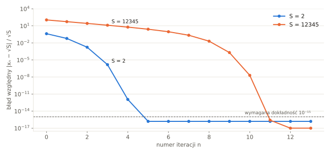

Idea geometryczna
Chcemy znaleźć bok kwadratu o polu S. Zaczynamy od dowolnego prostokąta o tym polu: jeśli jeden bok ma długość x, drugi musi mieć S/x. Jeśli x jest za duże, to S/x jest za małe – prawdziwy pierwiastek leży pomiędzy nimi. Naturalny pomysł: nowy bok to średnia obu boków. Prostokąt staje się coraz bardziej „kwadratowy”.
Wzór metody
Dla danej liczby S > 0 i przybliżenia początkowego x0 > 0 kolejne przybliżenia obliczamy według wzoru:
Wyprowadzenie z metody Newtona
Pierwiastek z S jest miejscem zerowym funkcji f(x) = x² − S, której pochodna to f ′(x) = 2x. Wstawiamy to do wzoru Newtona:
Babilończycy odkryli więc – bez rachunku różniczkowego – szczególny przypadek metody Newtona, którą sformułowano ponad 3000 lat później.
Dlaczego to działa? Dowód zbieżności
Oznaczmy błąd en = xn − √S. Prosty rachunek daje:
Z tego wzoru wynikają trzy ważne własności:
- Od pierwszego kroku jesteśmy nad pierwiastkiem. Prawa strona jest nieujemna, więc xn ≥ √S dla n ≥ 1 (to także nierówność między średnią arytmetyczną a geometryczną: (a + b)/2 ≥ √(ab)).
- Ciąg maleje. Skoro xn ≥ √S, to S/xn ≤ xn, więc średnia xn+1 ≤ xn. Ciąg malejący i ograniczony z dołu jest zbieżny – i to do √S.
- Zbieżność jest kwadratowa. Błąd w kolejnym kroku jest proporcjonalny do kwadratu poprzedniego błędu. Jeśli błąd wynosi 10⁻⁴, to w następnym kroku będzie rzędu 10⁻⁸, potem 10⁻¹⁶. Liczba poprawnych cyfr podwaja się!
Metoda jest zbieżna dla każdego dodatniego przybliżenia początkowego – nie trzeba się obawiać, że „ucieknie”. Od wyboru x0 zależy tylko liczba kroków.

Przykład: √2 na ułamkach
Zacznijmy od x0 = 1. Rachunek na ułamkach zwykłych pokazuje, skąd wzięły się starożytne przybliżenia:
| n | xn (ułamek) | xn (dziesiętnie) | poprawne cyfry |
|---|---|---|---|
| 0 | 1 | 1,000000000000 | 1 |
| 1 | (1 + 2/1)/2 = 3/2 | 1,500000000000 | 1 |
| 2 | (3/2 + 4/3)/2 = 17/12 | 1,416666666667 | 3 |
| 3 | 577/408 | 1,414215686275 | 6 |
| 4 | 665 857/470 832 | 1,414213562375 | 12 |
| 5 | 886 731 088 897/627 013 566 048 | 1,414213562373 | ≥ 16 |
Wybór przybliżenia początkowego
W programie używamy najprostszego wyboru x0 = S. Jest poprawny dla każdego S > 0, ale dla dużych liczb daleki od wyniku – przez pierwsze kroki przybliżenie tylko maleje mniej więcej o połowę. Dla S = 1 000 000 potrzeba 16 iteracji, choć przy x0 = 1024 wystarczyłyby 4. Biblioteki matematyczne wykorzystują zapis liczby w pamięci (wykładnik), aby od razu zacząć blisko wyniku.
Warunek zakończenia
Iteracje kończymy, gdy dwa kolejne przybliżenia różnią się mniej niż o zadaną dokładność. Aby wynik miał 15 cyfr dokładności, a pętla zawsze się kończyła (patrz liczby double), stosujemy warunek względny:
Algorytm w punktach
- Wczytaj liczbę S ≥ 0. Jeśli S = 0, zwróć 0.
- Przyjmij x = S.
- Oblicz xnowe = (x + S/x) / 2.
- Jeśli |x − xnowe| ≤ ε·xnowe, zwróć xnowe i zakończ.
- W przeciwnym razie podstaw x = xnowe i wróć do kroku 3.
Gotowe implementacje w pseudokodzie, Pythonie, C++ i Excelu znajdziesz w rozdziale Implementacja.